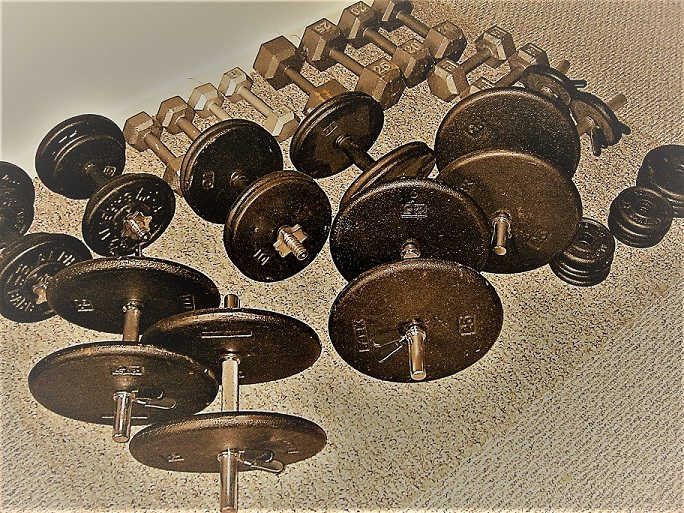

Overview
- There is an overwhelming amount of information. Every week, there is a different diet strategy, every month a new way to increase muscle. For most people, 'Sensible and Sustainable' is a good model. A plan that includes the longer term. The hare versus the tortoise.
- A sensible approach is easier to stick to and stands a better chance of becoming a regular habit.
- Exercise can be 'strong medicine'. You need to use the right amount. Fatigue and minor aches and pains can accumulate. Usually the best plans involve an ebb and flow (they are periodized).
- Fitness maintenance is easier than fitness development (I like to say that the 'law of diminishing returns' works in your favour in the other direction) 🙂. You take advantage of this when you use periodization.
- Essentially, during lower intensity phases, you 'lose' more fatigue than you do fitness.
- Some gentle exercise should be done throughout the day, to break up periods of inactivity, i.e. 'desk breaks' or similar.
- Eating more of the most nutritious foods and increasingly avoiding more highly processed foods is a great starting point for a dietary plan. FYI, the scale is not an accurate measure in the short term. A change of 50 pounds per year would only be about 2 ounces per day, barely visible.
- Most people have unique issues that require customization of a training program. For example, a sore shoulder or knee. This can last for a very brief time, or be something more chronic. Certain exercises or intensity levels may have to be modified or even avoided.
- It's not an election. You don't have to pick one camp exclusively in your approach. For example, you don't have to be 100% vegan (or carnivore!), or use 100% free weights, or always use heavy weights and low reps, or completely avoid cardio, or crunches, and so on.